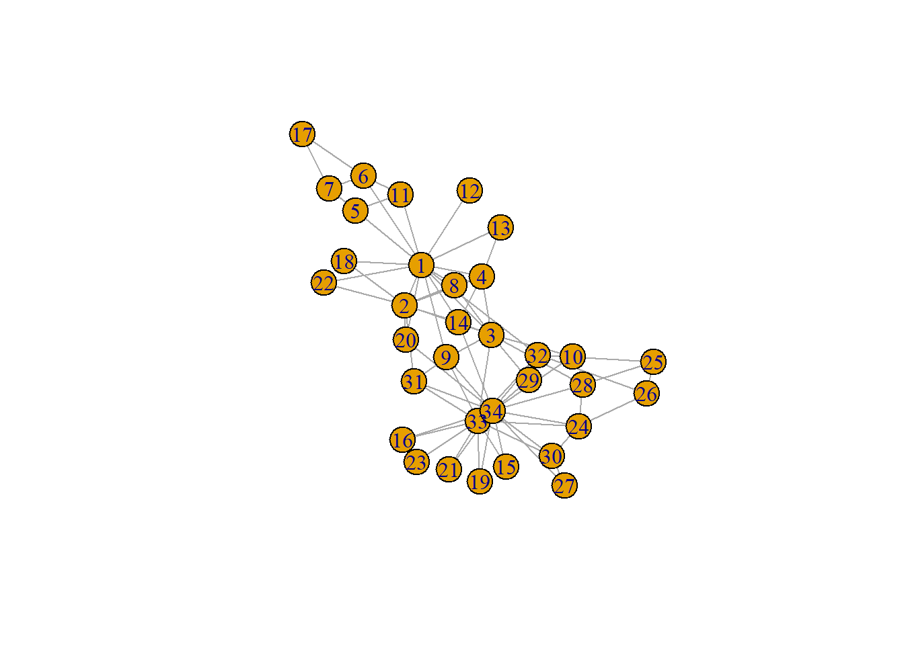
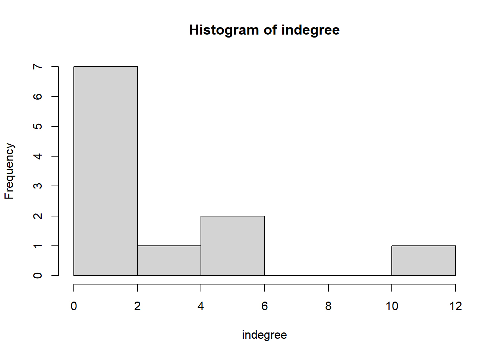
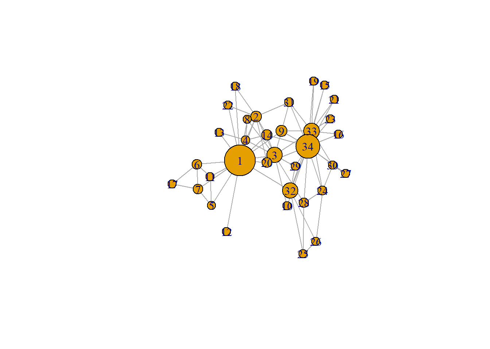
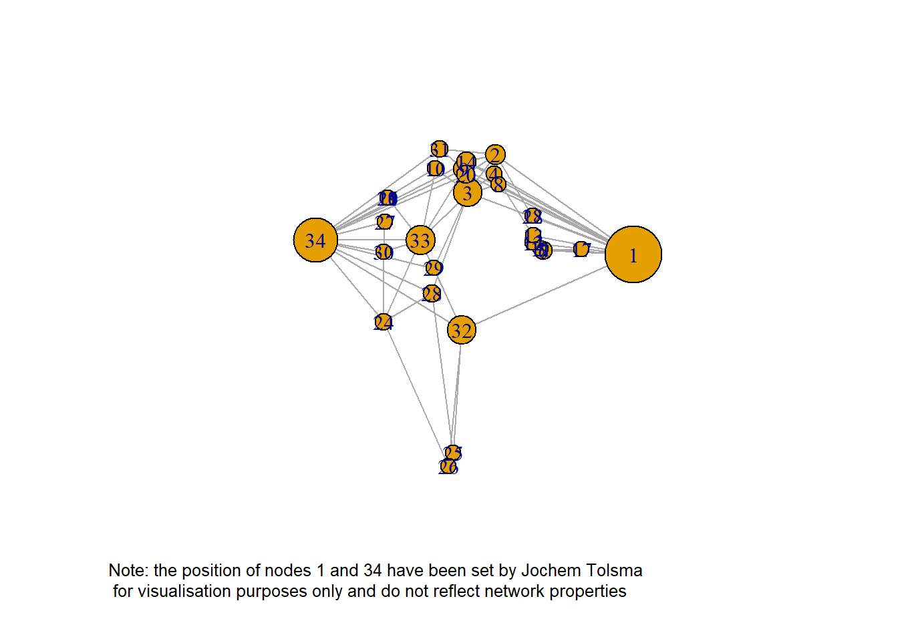

Chapter 9 - Network Visualisation Practice
Verooo
2024-09-25
1 9.1 Zachary’s karate club
require(igraph)
g <- make_graph("Zachary")
plot(g)
# adjacentcy matrix
gmat <- as_adjacency_matrix(g, type = "both", sparse = FALSE)
gmat#> [,1] [,2] [,3] [,4] [,5] [,6] [,7] [,8] [,9] [,10] [,11] [,12] [,13] [,14] [,15] [,16] [,17]
#> [1,] 0 1 1 1 1 1 1 1 1 0 1 1 1 1 0 0 0
#> [2,] 1 0 1 1 0 0 0 1 0 0 0 0 0 1 0 0 0
#> [3,] 1 1 0 1 0 0 0 1 1 1 0 0 0 1 0 0 0
#> [4,] 1 1 1 0 0 0 0 1 0 0 0 0 1 1 0 0 0
#> [5,] 1 0 0 0 0 0 1 0 0 0 1 0 0 0 0 0 0
#> [6,] 1 0 0 0 0 0 1 0 0 0 1 0 0 0 0 0 1
#> [7,] 1 0 0 0 1 1 0 0 0 0 0 0 0 0 0 0 1
#> [8,] 1 1 1 1 0 0 0 0 0 0 0 0 0 0 0 0 0
#> [9,] 1 0 1 0 0 0 0 0 0 0 0 0 0 0 0 0 0
#> [10,] 0 0 1 0 0 0 0 0 0 0 0 0 0 0 0 0 0
#> [11,] 1 0 0 0 1 1 0 0 0 0 0 0 0 0 0 0 0
#> [12,] 1 0 0 0 0 0 0 0 0 0 0 0 0 0 0 0 0
#> [13,] 1 0 0 1 0 0 0 0 0 0 0 0 0 0 0 0 0
#> [14,] 1 1 1 1 0 0 0 0 0 0 0 0 0 0 0 0 0
#> [15,] 0 0 0 0 0 0 0 0 0 0 0 0 0 0 0 0 0
#> [16,] 0 0 0 0 0 0 0 0 0 0 0 0 0 0 0 0 0
#> [17,] 0 0 0 0 0 1 1 0 0 0 0 0 0 0 0 0 0
#> [18,] 1 1 0 0 0 0 0 0 0 0 0 0 0 0 0 0 0
#> [19,] 0 0 0 0 0 0 0 0 0 0 0 0 0 0 0 0 0
#> [20,] 1 1 0 0 0 0 0 0 0 0 0 0 0 0 0 0 0
#> [21,] 0 0 0 0 0 0 0 0 0 0 0 0 0 0 0 0 0
#> [22,] 1 1 0 0 0 0 0 0 0 0 0 0 0 0 0 0 0
#> [23,] 0 0 0 0 0 0 0 0 0 0 0 0 0 0 0 0 0
#> [24,] 0 0 0 0 0 0 0 0 0 0 0 0 0 0 0 0 0
#> [25,] 0 0 0 0 0 0 0 0 0 0 0 0 0 0 0 0 0
#> [26,] 0 0 0 0 0 0 0 0 0 0 0 0 0 0 0 0 0
#> [27,] 0 0 0 0 0 0 0 0 0 0 0 0 0 0 0 0 0
#> [28,] 0 0 1 0 0 0 0 0 0 0 0 0 0 0 0 0 0
#> [29,] 0 0 1 0 0 0 0 0 0 0 0 0 0 0 0 0 0
#> [30,] 0 0 0 0 0 0 0 0 0 0 0 0 0 0 0 0 0
#> [31,] 0 1 0 0 0 0 0 0 1 0 0 0 0 0 0 0 0
#> [32,] 1 0 0 0 0 0 0 0 0 0 0 0 0 0 0 0 0
#> [33,] 0 0 1 0 0 0 0 0 1 0 0 0 0 0 1 1 0
#> [34,] 0 0 0 0 0 0 0 0 1 1 0 0 0 1 1 1 0
#> [,18] [,19] [,20] [,21] [,22] [,23] [,24] [,25] [,26] [,27] [,28] [,29] [,30] [,31] [,32]
#> [1,] 1 0 1 0 1 0 0 0 0 0 0 0 0 0 1
#> [2,] 1 0 1 0 1 0 0 0 0 0 0 0 0 1 0
#> [3,] 0 0 0 0 0 0 0 0 0 0 1 1 0 0 0
#> [4,] 0 0 0 0 0 0 0 0 0 0 0 0 0 0 0
#> [5,] 0 0 0 0 0 0 0 0 0 0 0 0 0 0 0
#> [6,] 0 0 0 0 0 0 0 0 0 0 0 0 0 0 0
#> [7,] 0 0 0 0 0 0 0 0 0 0 0 0 0 0 0
#> [8,] 0 0 0 0 0 0 0 0 0 0 0 0 0 0 0
#> [9,] 0 0 0 0 0 0 0 0 0 0 0 0 0 1 0
#> [10,] 0 0 0 0 0 0 0 0 0 0 0 0 0 0 0
#> [11,] 0 0 0 0 0 0 0 0 0 0 0 0 0 0 0
#> [12,] 0 0 0 0 0 0 0 0 0 0 0 0 0 0 0
#> [13,] 0 0 0 0 0 0 0 0 0 0 0 0 0 0 0
#> [14,] 0 0 0 0 0 0 0 0 0 0 0 0 0 0 0
#> [15,] 0 0 0 0 0 0 0 0 0 0 0 0 0 0 0
#> [16,] 0 0 0 0 0 0 0 0 0 0 0 0 0 0 0
#> [17,] 0 0 0 0 0 0 0 0 0 0 0 0 0 0 0
#> [18,] 0 0 0 0 0 0 0 0 0 0 0 0 0 0 0
#> [19,] 0 0 0 0 0 0 0 0 0 0 0 0 0 0 0
#> [20,] 0 0 0 0 0 0 0 0 0 0 0 0 0 0 0
#> [21,] 0 0 0 0 0 0 0 0 0 0 0 0 0 0 0
#> [22,] 0 0 0 0 0 0 0 0 0 0 0 0 0 0 0
#> [23,] 0 0 0 0 0 0 0 0 0 0 0 0 0 0 0
#> [24,] 0 0 0 0 0 0 0 0 1 0 1 0 1 0 0
#> [25,] 0 0 0 0 0 0 0 0 1 0 1 0 0 0 1
#> [26,] 0 0 0 0 0 0 1 1 0 0 0 0 0 0 1
#> [27,] 0 0 0 0 0 0 0 0 0 0 0 0 1 0 0
#> [28,] 0 0 0 0 0 0 1 1 0 0 0 0 0 0 0
#> [29,] 0 0 0 0 0 0 0 0 0 0 0 0 0 0 1
#> [30,] 0 0 0 0 0 0 1 0 0 1 0 0 0 0 0
#> [31,] 0 0 0 0 0 0 0 0 0 0 0 0 0 0 0
#> [32,] 0 0 0 0 0 0 0 1 1 0 0 1 0 0 0
#> [33,] 0 1 0 1 0 1 1 0 0 0 0 0 1 1 1
#> [34,] 0 1 1 1 0 1 1 0 0 1 1 1 1 1 1
#> [,33] [,34]
#> [1,] 0 0
#> [2,] 0 0
#> [3,] 1 0
#> [4,] 0 0
#> [5,] 0 0
#> [6,] 0 0
#> [7,] 0 0
#> [8,] 0 0
#> [9,] 1 1
#> [10,] 0 1
#> [11,] 0 0
#> [12,] 0 0
#> [13,] 0 0
#> [14,] 0 1
#> [15,] 1 1
#> [16,] 1 1
#> [17,] 0 0
#> [18,] 0 0
#> [19,] 1 1
#> [20,] 0 1
#> [21,] 1 1
#> [22,] 0 0
#> [23,] 1 1
#> [24,] 1 1
#> [25,] 0 0
#> [26,] 0 0
#> [27,] 0 1
#> [28,] 0 1
#> [29,] 0 1
#> [30,] 1 1
#> [31,] 1 1
#> [32,] 1 1
#> [33,] 0 1
#> [34,] 1 01.1 9.1.1. Descriptive statistics
1.1.1 Size
# number of nodes
vcount(g)#> [1] 34# number of edges
ecount(g)#> [1] 781.1.1.1 degree
In-degree = how many ties come “towards you”
igraph::degree(g)#> [1] 16 9 10 6 3 4 4 4 5 2 3 1 2 5 2 2 2 2 2 3 2 2 2 5 3 3 2 4 3 4 4 6
#> [33] 12 17hist(table(degree(g)), xlab = "indegree", main = "Histogram of indegree")
1.1.1.2 transitivity
For undirected networks, the clustering coefficient is the same as
the transitivity index:
the number of transitive triads divided by all possible
transitive triads.
For directed graphs not so.
# be aware that directed graphs are considered as undirected. but g is undirected.
igraph::transitivity(g, type = c("localundirected"), isolates = c("NaN", "zero"))#> [1] 0.1500000 0.3333333 0.2444444 0.6666667 0.6666667 0.5000000 0.5000000 1.0000000 0.5000000
#> [10] 0.0000000 0.6666667 NaN 1.0000000 0.6000000 1.0000000 1.0000000 1.0000000 1.0000000
#> [19] 1.0000000 0.3333333 1.0000000 1.0000000 1.0000000 0.4000000 0.3333333 0.3333333 1.0000000
#> [28] 0.1666667 0.3333333 0.6666667 0.5000000 0.2000000 0.1969697 0.1102941see also: 9.1.3 triad-census
1.1.1.3 betweenness
For all dyads: testing shortest path.
Number of shortest path between two nodes
divided by
How many of those shortest paths is “i” part of ?
igraph::betweenness(g, directed = FALSE)#> [1] 231.0714286 28.4785714 75.8507937 6.2880952 0.3333333 15.8333333 15.8333333 0.0000000
#> [9] 29.5293651 0.4476190 0.3333333 0.0000000 0.0000000 24.2158730 0.0000000 0.0000000
#> [17] 0.0000000 0.0000000 0.0000000 17.1468254 0.0000000 0.0000000 0.0000000 9.3000000
#> [25] 1.1666667 2.0277778 0.0000000 11.7920635 0.9476190 1.5428571 7.6095238 73.0095238
#> [33] 76.6904762 160.55158731.2 9.1.2 dyad-census
igraph::dyad_census(g)#> $mut
#> [1] 78
#>
#> $asym
#> [1] 0
#>
#> $null
#> [1] 483##9.1.3 triad-census
igraph::triad_census(g)#> [1] 3971 0 1575 0 0 0 0 0 0 0 393 0 0 0 0 45# I will use sna because it shows the names of the triads as well.
sna::triad.census(gmat)#> 003 012 102 021D 021U 021C 111D 111U 030T 030C 201 120D 120U 120C 210 300
#> [1,] 3971 0 1575 0 0 0 0 0 0 0 393 0 0 0 0 45unloadNamespace("sna") #I will detach this package again, otherwise it will interfere with all kind of functions from igraph, and my students will hate me for that.
# calculate transitivity
igraph::transitivity(g, type = "global")#> [1] 0.2556818sna::gtrans(gmat)#> [1] 0.2556818triad_g <- data.frame(sna::triad.census(gmat))
transitivity_g <- (3 * triad_g$X300)/(triad_g$X201 + 3 * triad_g$X300)
transitivity_g#> [1] 0.2556818# 0.25568181.3 9.1.4 Network visualisation
1.3.1 proportional betweenness score
# changing V
V(g)$size = betweenness(g, normalized = T, directed = FALSE) * 60 + 10 #after some trial and error
plot(g, mode = "undirected")
placing node 33 and 34 further apart:
set.seed(2345)
l <- layout_with_mds(g) #https://igraph.org/r/doc/layout_with_mds.html
plot(g, layout = l)
place 33 and 34 even further apart:
l #let us take a look at the coordinates#> [,1] [,2]
#> [1,] 1.070931935 -0.172458113
#> [2,] 0.732844464 0.754023309
#> [3,] 0.100582299 0.397693607
#> [4,] 0.708246655 0.570205545
#> [5,] 1.816293170 -0.120778206
#> [6,] 1.881329566 -0.135518854
#> [7,] 1.881329566 -0.135518854
#> [8,] 0.812606714 0.472619437
#> [9,] -0.003769996 0.615513628
#> [10,] -0.685680315 0.621065149
#> [11,] 1.816293170 -0.120778206
#> [12,] 1.621247830 -0.065820692
#> [13,] 1.637845123 0.001789972
#> [14,] 0.067317230 0.681421148
#> [15,] -1.796316404 0.351417630
#> [16,] -1.796316404 0.351417630
#> [17,] 2.775260452 -0.124317652
#> [18,] 1.616210024 0.182510197
#> [19,] -1.796316404 0.351417630
#> [20,] 0.048362858 0.566654982
#> [21,] -1.796316404 0.351417630
#> [22,] 1.616210024 0.182510197
#> [23,] -1.796316404 0.351417630
#> [24,] -1.891240567 -0.799574907
#> [25,] -0.258345165 -2.006346563
#> [26,] -0.360530857 -2.131642875
#> [27,] -1.865177401 0.128596564
#> [28,] -0.760226022 -0.529392331
#> [29,] -0.710979936 -0.299960128
#> [30,] -1.898426916 -0.149398746
#> [31,] -0.568691923 0.804189411
#> [32,] -0.048136037 -0.870967614
#> [33,] -1.023681000 -0.035802363
#> [34,] -1.146442924 -0.037605192l[1, 1] <- 4
l[34, 1] <- -3.5
plot(g, layout = l)
CAUTION!!
“In the last step we manipulated our data. The coordinates of two nodes have been altered manually and are no longer determined by some ‘objective’ algorithm. Is this not the same as slightly changing an inconvenient correlation in a correlation matrix or as removing some outliers from our dataset? At the very minimum, make sure to tell your readers what you have done! Add a note/legend to your graph.”
plot(g, layout = l, margin = c(0, 0, 0, 0))
legend(x = -2.5, y = -1.5, c("Note: the position of nodes 1 and 34 have been set by Jochem Tolsma \n for visualisation purposes only and do not reflect network properties"),
bty = "n", cex = 0.8, xpd = TRUE)
PROBLEM: Note is not visible in my output
SOLUTION: added the “xpd = TRUE” to legend
1.4 9.2 Twittersphere in the Dutch HoP
load("twitter_20190919.RData") #change to your working directory
str(twitter_20190919, 1)#> List of 3
#> $ keyf :'data.frame': 147 obs. of 41 variables:
#> $ mydata:List of 8
#> ..- attr(*, "higher")= Named logi [1:9] FALSE FALSE FALSE FALSE FALSE FALSE ...
#> .. ..- attr(*, "names")= chr [1:9] "fnet,fnet" "atmnet,fnet" "rtnet,fnet" "fnet,atmnet" ...
#> ..- attr(*, "disjoint")= Named logi [1:9] FALSE FALSE FALSE FALSE FALSE FALSE ...
#> .. ..- attr(*, "names")= chr [1:9] "fnet,fnet" "atmnet,fnet" "rtnet,fnet" "fnet,atmnet" ...
#> ..- attr(*, "atLeastOne")= Named logi [1:9] FALSE FALSE FALSE FALSE FALSE FALSE ...
#> .. ..- attr(*, "names")= chr [1:9] "fnet,fnet" "atmnet,fnet" "rtnet,fnet" "fnet,atmnet" ...
#> ..- attr(*, "class")= chr "siena"
#> $ seats :'data.frame': 150 obs. of 5 variables:keyf <- twitter_20190919[[1]]
mydata <- twitter_20190919[[2]]
seats <- twitter_20190919[[3]]So, what do we have?
keyf: a data.frame on 147 Dutch MPs.mydata: This an object which is ready to analyze in RSiena. It is actually a quite complicated object. For now three things are important:The nodes in
mydataare the same as inkeyfand inseats.It contains the twitter data at three timepoints (in
mydata$depvars). We have three layers:fnet: who follows whom
atmnet: who atmentions whom
rtnet: who retweats whom
It also contains time invariant information on the nodes (in
mydata$cCovars)
seats: a dataset which contains the coordinates of the seats in the House of Parliament in the Netherlands.